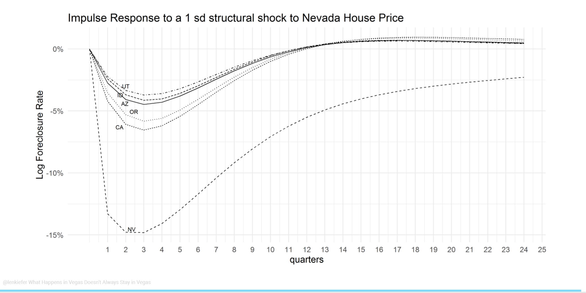
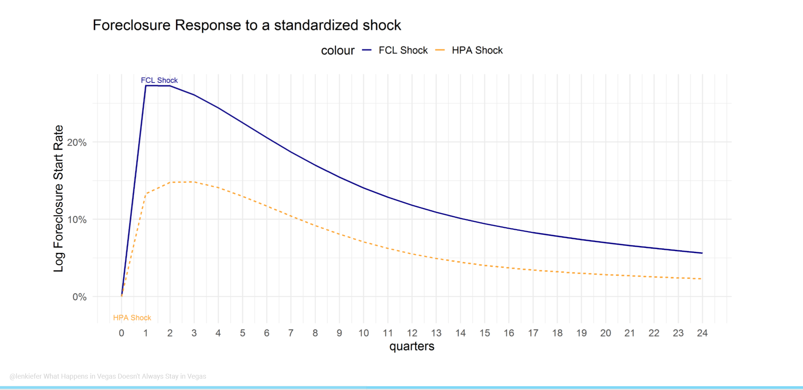

I’ve got a new working paper with Hua Kiefer (FDIC) and Diana Wei (OCC) that studies the dynamics of house prices and foreclosure rates across space and time. We estimate a model using a panel of state/quarters where nearby states influence one another.
Link to paper (pdf): What Happens in Vegas Doesn’t Always Stay in Vegas Note Updated May 17, 2019
I’m giving a talk on this paper at the American Real Estate and Urban Economics National Conference later this month. My Session, House Prices II is Friday, May 31, 2019 at 8 am. Stop by and say hey if you’re around. I’m putting some finishing touches on my slides, but here are some key draft slides.
Updated May 28, 2019
The links below give presentation slides
Abstract
This paper identifies novel instruments for house prices and foreclosure rates, and use Dynamic Spatial Simultaneous Equation system (DSSES) to investigate the causal impact of each variables. Our results show that there is an economically significant impact of foreclosure rates on house prices and vice versa. Shocks to the foreclosure rate in one state not only impact house prices in that state, but also the foreclosure rate and house prices in nearby states, and ripple across the country. When it comes to the housing market, what happens in Vegas doesn’t always stay in Vegas. We estimate that a one standard deviation foreclosure shock leads to a 2 percent decline in real house prices over the long run. These results provide evidence that could be useful for policymakers evaluating the effectiveness of foreclosure mitigation programs at a national level.
Overview
Motivation
We begin with the observation that foreclosure rates and real house price growth are negatively correlated. One could cause the other, but it’s probably both causing one another.
Another way of looking at the same using geo_facets. X axis is log foreclosure start rate and the y axis is quarterly real house price growth (log difference in index).
Models
One way to deal with endogeneity is to treat all variables as endogenous and estimate a dynamic system using a panel vector autoregression.
Panel Vector AutoRegression (PVAR)
\[\color{LimeGreen}{Y_{n2}^{\ast}(t)}\color{black}=\sum_{\mathcal{j=1}}^{p}\color{DodgerBlue}{Y_{n2}^{\ast}(t-j)P_{j}} +\color{red}{d^{\prime }\otimes l_{n}}\color{black}+\color{purple}{C}+\color{orange}{U_{n2}^{\ast }(t)},\]
\(\color{LimeGreen}{Y_{n2}^{\ast}(t)}\) are dependent variables
\(\color{DodgerBlue}{Y_{n2}^{\ast}(t-j)P_{j}}\) are time lags effects
\(\color{red}{d^{\prime }\otimes l_{n}}\) are state fixed effects
\(\color{purple}C\) constant (normalized so \(\sum_{i=1}^{n}c_{1,i}=0\))
\(\color{orange}{U_{n2}^{\ast }(t)}\) disturbance term
You still need some identification approach though, and the traditional approach of a recursive structure isn’t that convincing. It also doesn’t take full advantage of the state panel. If nearby states have correlated shocks then you might do better by modeling it. We estimate a PVAR, but our main focus is another model.
We estimate a Dynamic Spatial System of Simultaneous Equations (DSSES). We treat house prices and foreclosure rates as the system and treat the other variables as predetermined. Unlike the PVAR (as typically implemented) we allow for simultaneous movement in house prices and foreclosure rates. We also allow for house prices and foreclosure rates to impact nearby states through a spatial weight matrix \(W\). We consider some robustness to alternative weighting matrices in the paper but we use a state adjacency matrix as a baseline.
Here’s the equations all mathy:
House Price Equation:
\[y_{1,i}(t) =-\gamma _{12}y_{2,i}(t)+\psi _{11}W_{n}Y_{1,n2}(t)+\sum_{\mathcal{j=1}}^{p}\rho_{j,11}y_{1,i}(t-j)+\\ \sum_{\mathcal{j=1}}^{p} \rho_{j,12}y_{2,i}(t-j)+x_{1,i}^{\prime }(t)\pi_{\cdot 1}+u_{1,i}(t),\]
Foreclosure Equation:
\[y_{2,i}(t) =-\gamma _{21}y_{1,i}(t)+\psi _{22}W_{n}Y_{2,n2}(t)+\sum_{\mathcal{j=1}}^{p}\rho_{j,22}y_{2,i}(t-j)+\\ \sum_{\mathcal{j=1}}^{p} \rho_{j,21}y_{1,i}(t-j)+x_{2,i}^{\prime }(t)\pi_{\cdot 2}+u_{2,i}(t)\]
Now let’s break down the house price equation:
House Price Equation:
\[\color{LimeGreen}{y_{1,i}(t)} \color{black}=-\gamma _{12}\color{DodgerBlue}{y_{2,i}(t)}\color{black}+\psi _{11}\color{LimeGreen}{W_{n}Y_{1,n2}(t)}\color{black}+\sum_{\mathcal{j=1}}^{p}\rho_{j,11}\color{LimeGreen}{y_{1,i}(t-j)}\color{black}+\\ \sum_{\mathcal{j=1}}^{p} \rho_{j,12}\color{DodgerBlue}{y_{2,i}(t-j)}\color{black}+\color{orange}{x_{1,i}^{\prime }(t)}\color{black}\pi_{\cdot 1}+u_{1,i}(t),\]
\(\color{LimeGreen}{y_{1,i}(t)}\) is real house price growth (quarterly log difference HPI)
\(\color{DodgerBlue}{y_{2,i}(t)}\) is log foreclosure rate
\(\color{LimeGreen}{W_{n}Y_{1,n2}(t)}\) is weighted average of neighbors’ real house price growth
\(\color{LimeGreen}{y_{2,i}(t-j)}\) is lagged real house price growth (\(j=1,2,...,p\) lags)
\(\color{DodgerBlue}{y_{2,i}(t-j)}\) is lagged log foreclosure rate (\(j=1,2,...,p\) lags)
\(\color{orange}{x_{1,i}^{\prime }(t)}\) are predetermined control variables
And the foreclosure equation:
\[\color{DodgerBlue}{y_{2,i}(t)} \color{black}=-\gamma _{21}\color{LimeGreen}{y_{1,i}(t)}\color{black}+\psi _{22}\color{DodgerBlue}{W_{n}Y_{2,n2}(t)}\color{black}+\sum_{\mathcal{j=1}}^{p}\rho_{j,22}\color{DodgerBlue}{y_{2,i}(t-j)}\color{black}+\\ \sum_{\mathcal{j=1}}^{p} \rho_{j,21}\color{LimeGreen}{y_{1,i}(t-j)}\color{black}+\color{orange}{x_{2,i}^{\prime }(t)}\color{black}\pi_{\cdot 2}+u_{2,i}(t),\]
\(\color{DodgerBlue}{y_{2,i}(t)}\) is log foreclosure rate
\(\color{LimeGreen}{y_{1,i}(t)}\) is real house price growth (quarterly log difference HPI)
\(\color{DodgerBlue}{W_{n}Y_{2,n2}(t)}\) is weighted average of neighbors’ log foreclosure rate
\(\color{DodgerBlue}{y_{2,i}(t-j)}\) is lagged log foreclosure rate (\(j=1,2,...,p\) lags)
\(\color{LimeGreen}{y_{1,i}(t-j)}\) is lagged real house price growth (\(j=1,2,...,p\) lags)
\(\color{orange}{x_{2,i}^{\prime }(t)}\) are predetermined control variables
Data
The lower 48 contiguous states, excluding the District of Columbia.
- Our estimation window covers 2005Q1-2018Q1
- 13.25 years (53 quarters)
- Dependent Variables
- Quarterly log difference in Real (inflation-adjusted) house prices
- FHFA All-Transactions House Price Index
- Deflated by BLS- CPIU: All Items less Shelter
- Log Foreclosure start rate
- MBA National Deliquency Survey
- We also include additional controls to account for economic and general housing market conditions (quarterly log difference of each).
- nonfarm payroll employment,
- per capita income,
single-family housing permits.
We also need instruments for our house prices and foreclosure rates.
Instruments
Our approach requires instrumental variables.
ARM reset as foreclosure I.V.
To quantify the causal effect of foreclosures on house prices, we propose a novel instrument by leveraging the space and time variations of the number of adjustable rate mortgages (ARMs) that are hit by their contractual interest rate reset clock. Specifically, we calculate the percentage of ARMs encountering upward rate reset over the total number of active loans in a given month for a given state and use it as the exclusion restriction for identifying the house price equation.
Natural population growth rate as house price I.V.
To quantify the causal effect of house prices on foreclosures, we use the quarterly change in the growth rate of natural population (i.e., \(\Delta\)(births - deaths)/population) as our instrument. Population growth reflects housing demand and is an important variable in many models of house prices. When population growth increases, household formation rates tend to rise, driving up housing demand. In markets with elastic housing supply over time the impact of increased population will be mitigated by expansion of the housing supply. However, many markets in the U.S. have inelastic housing supply. Moreover, housing is long-lasting and thus inelastic with respect to negative shocks. The housing supply just doesn’t shrink when housing demand contracts. Rather, vacancy rates tend to rise and house price growth suffers.
Results
Our main estimation results are in the table below:
House Price Equation (left)
Our results indicate that a 1 percent increase in the foreclosure rate ceteris paribus reduces real house prices by 5.4 basis points. The effect is dampened by the positive coefficient on the cross lag which nearly equals the contemporaneous coefficient. The reflects the fact that over the long run foreclosure innovations ought to have limited impact on the level of real house prices.
We find a significant positive coefficient on the spatial lag of 0.444. This implies that a 1 percent increase in the neighboring states’ house prices leads to a 0.444 percent increase in a state’s house prices. We also see a own time lag of 0.228, implying house price innovations are persistent. The IV for house prices, dnpopg has a small, but statistically significant coefficient of 0.352. This implies that a 1 percentage point increase in the state’s natural population growth rate (birth rate minus death rate) leads to a 0.352 percent increase in real house prices. The control variables dlemp lag1, dlpinc lag1, and dlperm lag1 show up as significant drivers of house prices though their signs are difficult to interpret in isolation due to considerable collinearity between the three variables. For example, employment growth shows up with a positive coefficient while per capita income has a negative coefficient. However, employment is unlikely to increase without an impact on per capita income. When we estimate the model with only one of the predetermined variables the signs are as expected (positive), but our ability to identify the contemporaneous impact of foreclosure shocks is reduced.
Foreclosure Equation (right)
We now move on to the foreclosure equation. We find a large and significant negative coefficient on HPA, indicating an increase in house prices lower the foreclosure start rate as economic theory would suggest. The spatial lag coefficient for the foreclosure equation shows up with a small, but statistically significant sign. The interpretation of this negative spatial lag coefficient is not straightforward, but it is important to remember that we have estimated a complex dynamic equation system.
There is a lot of persistence in the foreclosure equation with an owntime lag1 of 0.932. This implies that four quarters following a shock over 3/4 of the effect (0.9324 = 0.7545) remains. The cross lag of HPA on FCL has opposite sign to the contemporaneous impact of HPA on FCL indicating some dampening over time. Our instrument log arm has a statistically significant impact on the foreclosure rate. A one percent increase in the share of mortgage loans that experience a payment shock increases the foreclosure rate by 1 basis point. That effect may seem economically small, but the standard deviation of our log arm indicator is 0.842, indicating a typical shock to log_arm raises the foreclosure rate by 0.842 percent. As in the HPA equation interpreting the control variables individually is difficult, but we see statistically significant impacts from each control.
Impulse Response Functions
Even though the DSSES results are easier to inspect than the PVAR(12) coefficients, it is still somewhat difficult to build intuition for such a complex model by only considering coefficients. The figures (tables in the paper) below shed some additional light on the results
Response of house prices to a Nevada foreclosure shock
We trace out the impulse response of house prices in Nevada and nearby states following a one standard deviation shock to Nevada’s foreclosure rate.
Response of foreclosure rates to a Nevada foreclosure shock
We trace out the impulse response of foreclosure rates in Nevada and nearby states following a one standard deviation shock to Nevada’s house price.

Comparison of response to standardized shocks
We can also trace out the response of house prices and foreclosure rates to a standardized shock:

Conclusion
In this paper we studied the dynamic relationship of house prices and foreclosure rates across space and time using a panel of U.S. states. Our results show that there is an economically significant impact of house prices on foreclosure rates and foreclosure rates on house prices. Moreover, even at the state level neighborhood effects are important. Shocks to the foreclosure rate in one state not only impacts house prices in that state, but also the foreclosure rate and house prices in nearby states. When it comes to the housing market, what happens in Vegas doesn’t always stay in Vegas.
You can view the full draft paper below: Note Draft updated May 17, 2019
Link to paper: Paper PDF